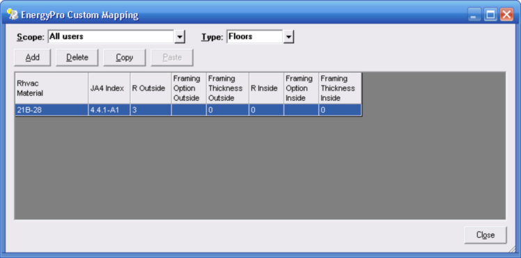

EnergyPro Custom Mapping (File | Export | EnergyPro Menu) |
  
|
EnergyPro Custom Mapping (File | Export | EnergyPro Menu) |
|
Icon: . Keyboard Shortcut: ALT, F, E, P, D
Opens the EnergyPro Custom Mapping dialog, pictured below, which lets you define the mapping of Rhvac (Manual J) materials to materials available in the EnergyPro program. The material mapping defined on this dialog determines the properties of materials that will be used in the BLD file generated from the current project when you use the Export to EnergyPro feature.

Scope: Determines whether the grid displays the current mapping scheme for all users, the current user, or the standard (read-only) mapping.
Note: If you want to change the mapping for a standard material that is included with Rhvac (and that is already mapped to an EnergyPro material), first select "Standard (Read-Only), then find and select the material for which you want to define custom mapping, then set the Scope to All Users or Current User, then click the Paste button. Then you can edit the properties in the grid to define your new custom mapping for that material. The custom mapping you define will override the standard mapping for that material.
Type: Lets you select whether to view the mapping for floors, roofs, walls or doors (glass items do not need mapping).
Add: Creates a new row in the current grid so you can define mapping for a material. After clicking Add, click in the "Rhvac Material" column then click the dropdown help button to select a material name. You can define mapping for standard materials as well as your own custom materials.
Delete: Deletes the currently selected row from the grid.
Copy: Copies the current row to the clipboard so you can paste it into another row with the Paste button.
Paste: Pastes a material into the current row that you had earlier copied to the clipboard.
Close: Closes this dialog without making any further changes.